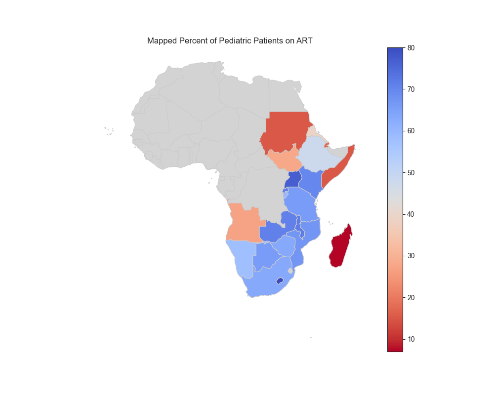

About Me
Hello! I'm Austin Green, a healthcare professional with extensive expertise in pharmacy, public health, and data analytics. My passion lies at the intersection of innovation and patient care, where I leverage technology to address systemic challenges in healthcare. I have a proven record of leadership in guiding multidisciplinary teams, fostering collaboration, and driving impactful initiatives in pharmacy and beyond.
Beyond technical proficiency, I am committed to service, having dedicated my career to enhancing healthcare systems and improving lives. I take immense pride in mentoring and inspiring future pharmacists to become leaders in their own right, shaping the next generation of professionals who will continue to innovate and serve their communities with excellence.
Explore my portfolio and CV to see how I've contributed to shaping innovative solutions in the field of pharmacy and healthcare.
Curriculum Vitae
Download my CV below or view it directly!
Download CVProjects
Antiretroviral Therapy in Pediatric Patients in Eastern and Southern Africa
Antiretroviral Therapy (ART) is a life-saving treatment for individuals living with HIV. By using a combination of antiretroviral drugs, ART suppresses the replication of the virus in the body, preventing the progression of HIV into AIDS. For pediatric patients, ART is critically important. Early initiation of ART in children not only reduces mortality and morbidity but also ensures proper growth and development, giving children the opportunity to lead healthier lives.
The significance of ART in pediatric care cannot be overstated. Without timely treatment, children living with HIV face a much higher risk of severe infections, developmental delays, and other complications. ART offers hope for improved quality of life, while also contributing to broader public health goals, such as reducing HIV transmission.
The World Health Organization (WHO) and UNICEF play pivotal roles in monitoring and reporting global health data, including HIV/AIDS treatment coverage. These organizations compile open-access data from various countries to provide insights into the progress and gaps in ART access. By making this data freely available, they aim to drive evidence-based decision-making, inform policy, and foster collaboration among stakeholders working to combat the HIV/AIDS epidemic.
It is important to note that the data presented does not encompass all countries worldwide. This specific dataset focuses on Eastern and Southern Africa, a region disproportionately affected by the HIV/AIDS epidemic. Many nations in this area face significant challenges in providing equitable access to ART for children, resulting in treatment disparities that demand urgent attention.
While some countries have made commendable progress in scaling up pediatric ART coverage, others exhibit alarmingly low rates of treatment. Notably, Djibouti, Madagascar, Sudan, and Somalia have ART coverage rates below 20% for pediatric patients. These low rates highlight the persistent barriers to accessing life-saving treatment, such as limited healthcare infrastructure, stigma, and economic challenges.
Map of ART Coverage in Eastern and Southern Africa
This map illustrates the region of Africa focused on Eastern and Southern Africa, highlighting disparities in ART coverage among pediatric patients. Countries with higher percentages of children on ART are represented in shades of blue, while those with lower percentages are marked in shades of red. Madagascar stands out as a deep red outlier, indicating critically low ART coverage rates for children.
Pediatric ART Coverage Rates in Eastern and Southern Africa
While some countries have made substantial strides, many still have alarming treatment gaps. Djibouti, Madagascar, Sudan, and Somalia have rates of pediatric ART use below 20%, underscoring the urgency for improved treatment accessibility.

Cumulative ART Coverage Trends
Between 2017 and 2023, the cumulative number of children receiving ART in Eastern and Southern Africa exhibited a concerning decline. At its peak in 2017, over 650,000 children were receiving ART; however, this number fell to just over 500,000 children in 2023, signaling potential challenges in sustained treatment efforts.

ART Distribution by Country
Mozambique and South Africa lead in absolute numbers of pediatric ART recipients, but there is still room to increase their percentages of children on ART. Meanwhile, Eswatini boasts one of the highest treatment rates, nearly reaching universal ART coverage among children, though it represents a smaller portion of the population in Eastern and Southern Africa.

Contact
Let's connect! Feel free to reach out via email or LinkedIn.